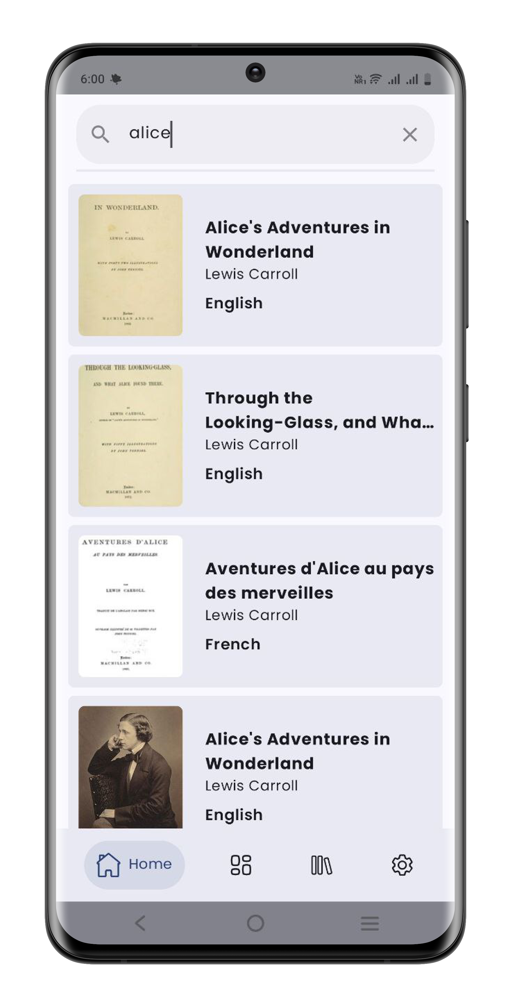
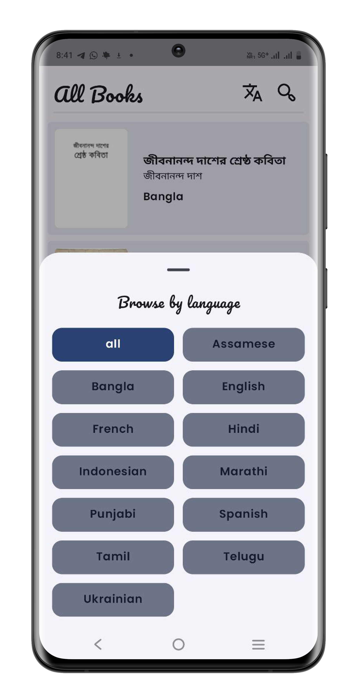
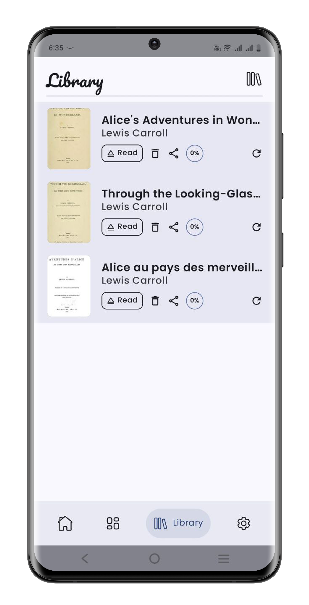
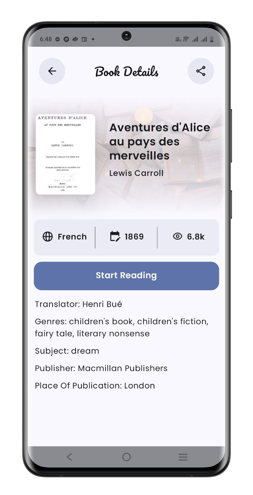
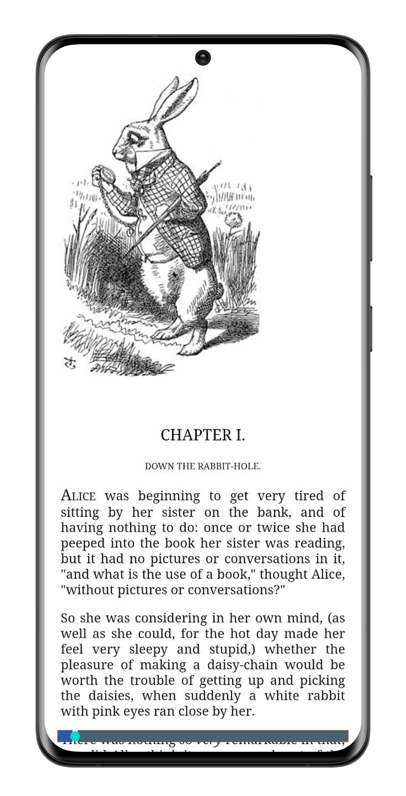
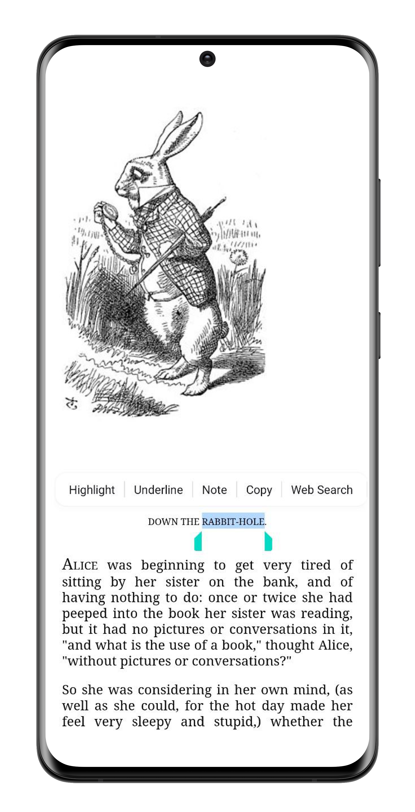
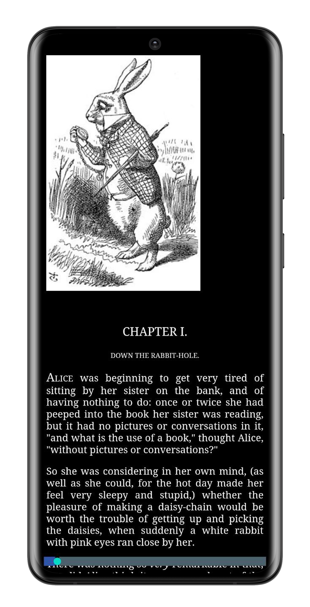

Wikisource Reader
Read | Download | Annotate | Share free books
Read | Download | Annotate | Share free books
The Wikisource Reader App is a community-maintained mobile application for Android users that lets you download and read freely licensed works from the open and free digital library of Wikisource .
Join Wikimedia — one of the largest open knowledge communities in the world. Wikisource is not only a digital library of the Wikimedia world containing innumerable scans of copyright-free books, newspapers, periodicals, manuscripts etc., but it is a unique transcription platform to make these materials freely and openly available, searchable and accesible over internet.
Discover the tools that make finding, organising, and reading books from Wikisource easier.

Search books in different languages from Wikisource which are ready to be read.

Filter books in different languages to search them easily.

Store all your selected books in your library, so that you can read them, share with others and delete them as you like.

Download selected books in Epub format and start reading.

Read your selected books from the Wikisource app! You can resume reading from the page where you have left last time.

Highlight, underline and take notes from selected texts and check them later as you need.

Change background and text colors, font size, page margins etc. to adjust your reading experience.
Installing and using the app is easy: